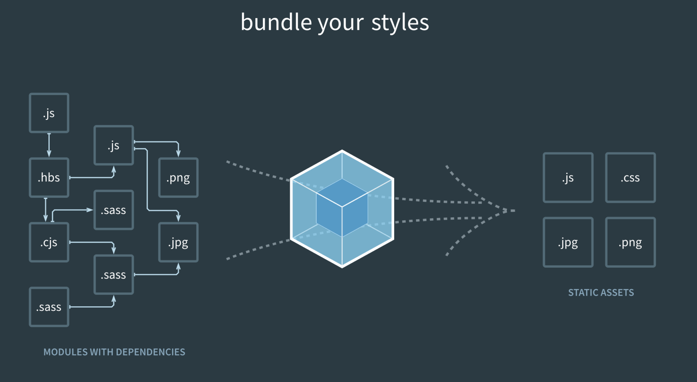
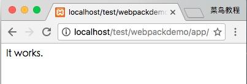
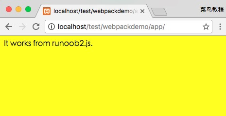

Webpack is a front-end resource loading/bundling tool. It performs static analysis based on module dependencies, and then generates corresponding static assets from these modules according to specified rules.
This chapter is tested and verified based on Webpack 3.0.

From the diagram, we can see that Webpack can convert multiple static assets such as js, css, and less into a single static file, reducing page requests.
Next, we will briefly introduce the installation and usage of Webpack.
Install Webpack
Before installing Webpack, your local environment needs to supportnode.js。
Because npm installation is slow, this tutorial uses Taobao's mirror and its command cnpm. For installation and usage instructions, refer to:Using Taobao NPM Mirror。
Install webpack using cnpm:
Create Project
Next, let's create a directory app:
Add a runoob1.js file in the app directory, with the following code:
app/runoob1.js file
Add an index.html file in the app directory, with the following code:
app/index.html file
Next, we use the webpack command to bundle:
Executing the above command will compile the runoob1.js file and generate a bundle.js file. Upon success, the output information is as follows:
Hash: a41c6217554e666594cb
Version: webpack 1.12.13
Time: 50ms
Asset Size Chunks Chunk Names
bundle.js 1.42 kB 0 [emitted] main
[0] ./runoob1.js 29 bytes {0} [built]
Open index.html in the browser, and the output result is as follows:

Create a second JS file
Next, we create another js file runoob2.js, with the following code:
app/runoob2.js file
Update the runoob1.js file, with the following code:
app/runoob1.js file
Next, we use the webpack command to bundle:
Access it in the browser, and the output result is as follows:

webpack performs static analysis based on module dependencies, and these files (modules) will be included in the bundle.js file. Webpack assigns a unique id to each module and uses this id to index and access the module. When the page starts, the code in runoob1.js is executed first, and other modules are executed when require is run.
LOADER
Webpack itself can only handle JavaScript modules. If you need to process other types of files, you need to use loaders for conversion.
Therefore, if we need to add CSS files to our application, we need to use css-loader and style-loader. They do two different things: css-loader traverses CSS files, finds url() expressions, and processes them; style-loader inserts the original CSS code into a style tag in the page.
Next, we use the following command to install css-loader and style-loader (global installation requires the -g parameter).
After executing the above command, a node_modules directory will be generated in the current directory. It is the installation directory for css-loader and style-loader.
Next, create a style.css file, with the following code:
app/style.css file
Modify the runoob1.js file, with the following code:
app/runoob1.js file
Next, we use the webpack command to bundle:
Access it in the browser, and the output result is as follows:

When requiring CSS files, you need to write the loader prefix!style-loader!css-loader!Of course, we can automatically bind the required loader based on the module type (extension). In the runoob1.js file, changerequire("!style-loader!css-loader!./style.css")Change torequire("./style.css") ：
app/runoob1.js file
Then execute:
Access it in the browser, and the output result is as follows:
Obviously, these two ways of using loaders have the same effect.
Configuration File
We can put some compilation options in a configuration file for unified management:
Create a webpack.config.js file, with the following code:
app/webpack.config.js file
Next, we only need to execute the webpack command to generate the bundle.js file:
After the webpack command is executed, it will load the webpack.config.js file in the current directory by default.
Plugins
Plugins are specified in the plugins option of webpack's configuration, and are used to accomplish tasks that loaders cannot.
Webpack comes with some built-in plugins, and you can install additional plugins via cnpm.
To use built-in plugins, you need to install them with the following command:
For example, we can install the built-in BannerPlugin plugin to output some comment information at the top of the file.
Modify webpack.config.js, with the following code:
app/webpack.config.js file
Then run:
webpack
Open bundle.js, and you can see the comment information we specified at the top of the file.
Development Environment
As the project grows larger, webpack's compilation time becomes longer. You can use parameters to make the compilation output include progress and colors.
If you don't want to recompile every time a module is modified, you can enable watch mode. After watch mode is enabled, unchanged modules are cached in memory after compilation and are not recompiled each time, so the overall speed of watch mode is very fast.
Of course, we can use the webpack-dev-server development server. This way, we can start an express static asset web server via localhost:8080, and it will automatically run webpack in watch mode. Opening http://localhost:8080/ or http://localhost:8080/webpack-dev-server/ in the browser allows you to browse the project's pages and the compiled asset output. It also listens for changes in real time via a socket.io service and automatically refreshes the page.
Open http://localhost:8080/ in the browser, and the output result is as follows: